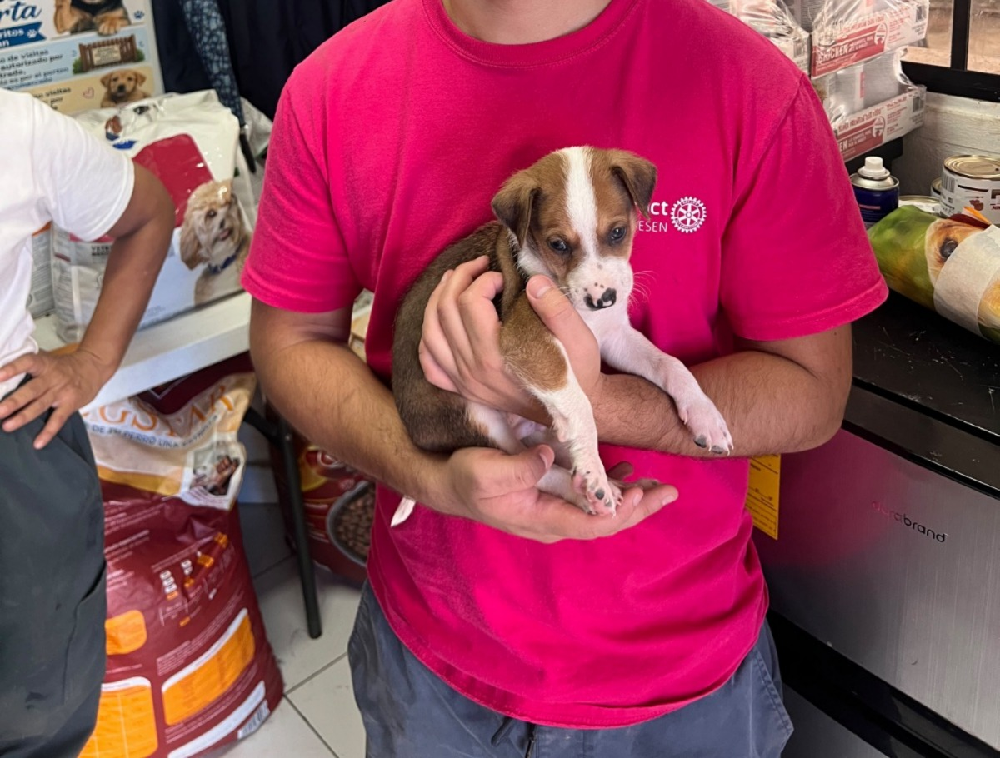

DONACIÓN ECONÓMICA
"Cada aporte financia tratamientos y comida diaria"

Elige el monto con el que deseas apoyar y selecciona el canal bancario o digital de tu preferencia para realizar tu aporte directo.
Todas las donaciones se destinan 100% a la alimentación, medicinas y cuidado de nuestros perritos.